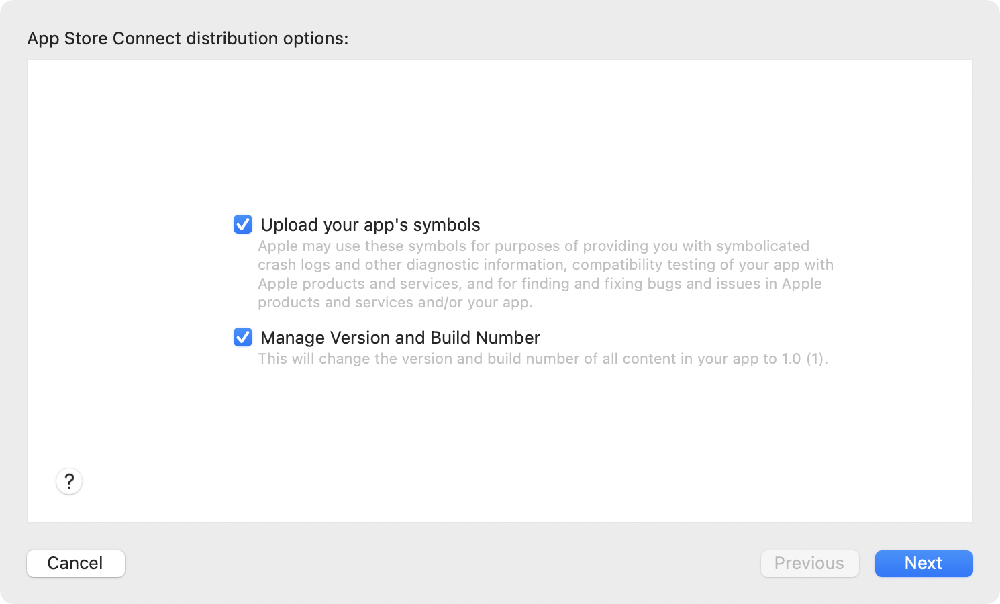

15.使用Mac应用程序商店¶
在完成本书所有章节的学习后，你现在有了四个Mac应用程序。每一个都是不同风格的应用程序，每一个都有不同的目的。
在成为Mac开发者的过程中，下一步是分发你的应用程序。
App Store是iOS应用程序的唯一分发选项，但macOS应用程序可以使用Mac App Store和外部分发。
在本节中，你将了解这两种可能性。本章讨论了这些选项，然后介绍使用Mac App Store进行测试和发布。
分销选择¶
使用App Store的优势和劣势是什么？
首先是优点：
- 苹果处理一切。他们提供应用程序，处理付款和退款，提供审查和评级机制，并提供崩溃报告。
- 用户对从
App Store下载应用程序感到更安全，并且不太愿意提供付款细节。 - 你可以使用
TestFlight开放你的应用程序进行测试。苹果公司自动处理分发、反馈机制和过期日期。 - 向你的应用程序的用户发布更新很容易。你上传一个新版本，
App Store应用就会安装它。
现在说说一些缺点：
- 你要听从应用程序审查系统的摆布。评审员通过大多数应用程序是没有问题的，或者只需稍作修改。但情况并不总是如此。
- 苹果从你的销售额中抽成：
30%或15%，取决于你是否在小企业计划中。 - 你的应用程序必须是沙盒的。对于大多数应用程序来说，这不是一个问题，但对于像
ImageSipper这样的应用程序，这就排除了App Store。 - 苹果不支持更新定价或免费试用。你可以通过让应用免费并通过应用内购买解锁来伪造试用，但这很混乱。苹果没有关于升级定价的规定。如果你发布了一个重要的修订版，你想让你的现有用户付费，你必须在
App Store创建一个全新的应用程序。然后，就没有办法给这些现有用户提供折扣。
你可能想知道为什么我没有把苹果开发者计划的费用作为一个缺点。正如你在下一章中所看到的，无论你的发行方式如何，苹果都在逐渐使之成为一种必需品。
有一件好事是，你不必非要选择一种方法。你可以自由地通过App Store和外部同时发布你的应用程序。
但在本章的其余部分，你将通过Mac App Store进行测试和分发的过程。如果你在处理iOS应用时已经很熟悉了，或者你已经决定不使用Mac App Store，那么你可以跳到下一章。
设置你的开发者账户¶
苹果公司有两个网站，你会使用。Apple Developer是你管理你的会员资格、下载测试软件、阅读论坛等的地方。而App Store Connect是你将配置你的应用程序、签署协议、处理付款以及执行与分发和支持你的应用程序相关的其他任务的地方。
第一步是确保你有一个Apple Developer账户。你需要一个开启了双因素认证的苹果ID。在苹果开发者计划页面开始注册过程。
接下来，你需要接受协议，进入App Store Connect的协议、税收和银行。你必须接受Free Apps协议。如果你想为你的应用程序收费，你还需要接受Paid Apps协议并提供你的银行和税务信息。
一旦你有一个开发者账户，将其链接到Xcode。打开Xcode并进入Xcode ▸ Preferences ▸ Accounts。点击+按钮并按照步骤添加您的Apple ID账户。
这使得Xcode能够解决所有的代码签名问题，并生成所需的证书。所有这些都设置好了，你就可以打开Xcode继续工作了。
在本章中，您将制作一个示例项目，并在App Store Connect中进行设置，并通过TestFlight进行测试。
识别你的应用程序¶
每个应用程序在App Store中都必须有一个独特的标识符。您可以使用Bundle Identifier来设置。一旦您在App Store Connect中创建了应用程序，它就会永远识别您的应用程序，并且永远不会改变。
在Xcode中创建一个新的应用程序项目并填写Organization Identifier和Product Name。Xcode使用这些为应用程序生成一个Bundle Identifier。
捆绑标识符的通常方案是将你的域名倒过来，再加上应用程序的名称。例如，设想你以Great Mac Apps开发，你的域名是greatmacapps.com。当为你的ReallyUsefulApp创建一个新项目时，你将使用com.greatmacapps作为Organization Identifier。Xcode会生成一个com.greatmacapps.ReallyUsefulApp的捆绑标识符。
你可以使用我的例子Organization Identifier，但你必须想出你自己的应用程序名称。我已经注册了ReallyUsefulApp，所以它对你不起作用。 :]
Note
如果你已经将你的苹果开发者帐户链接到Xcode，你可以在这里设置Team，但是你会在本章后面看到另一种设置方法。
一旦你保存了你的新项目，在项目导航器中选择最上面的条目，点击目标并进入General标签。在Identity部分，你会看到App Category、Bundle Identifier、Version和Build：
在这里为您的应用程序选择主要类别。你必须在App Store Connect的App Information部分再次设置，在那里你可以选择一个次要类别。但是如果你不在这里设置，Xcode稍后会抱怨。
如果你想改变默认的Bundle Identifier，在这里输入新的。
Version显示应用程序的版本控制。你可以使用任何你喜欢的方案，但有一个选择是Major.Minor.Patch方案，通常被称为Semantic Versioning。在这个方案中，版本有三个数字。主要更新增加第一个数字，次要变化增加第二个数字，错误修复增加第三个数字。
每个版本可以有很多构建。打开任何你建立的应用程序的About框。你会看到版本后面有一个数字或括号里的字符串。圆括号里的部分是构建。你每次上传你的应用程序到苹果公司时，都必须改变这个。
当你测试你的应用程序时，你将保持版本不变，并改变构建以识别新的更新。
当你更新发布的应用程序时，你将改变版本和构建。
代码签名¶
苹果使用代码签名作为验证你的应用程序的一种方式。当你上传你的应用程序到苹果，他们的服务器会分析它，将它与你的开发者身份相匹配，并附加一个数字签名。如果任何恶意软件改变了应用程序的代码，签名将不匹配，macOS将不会运行它。
仍然在Xcode的目标设置中，移动到下一个标签：Signing & Capabilities。你已经看过这个标签很多次了，但是只有App Sandbox部分。现在，你对Signing部分感兴趣。
Bundle Identifier来自于常规标签。这里要设置的项目是Team。由于您已经将您的帐户链接到Xcode，您可以从这个弹出窗口选择您的团队名称。这就把Signing Certificate的选择从Sign to Run Locally改为Development：
按Command-B来建立你的应用程序。如果你是第一次使用你的账户，你会得到一个对话框，要求你给codesign权限来访问你钥匙串中的苹果开发者账户。输入你的Mac的用户密码，然后点击Always Allow。如果你点击Allow，你会对这个对话框感到非常厌恶!
接下来，进入Product菜单，选择Archive。到目前为止，你所做的所有应用程序的构建都是使用Debug配置。归档使用的是Release配置，它删除了开发过程中才需要的调试功能。当Xcode完成创建归档后，它将打开Organizer窗口并向您展示：
上传您的应用程序¶
现在，是时候让Xcode赚钱了。接下来的阶段曾经是非常复杂和乏味的，但现代版本的Xcode为你做了很多工作。
在Organizer窗口，确保你已经选择了你的应用程序的最新存档，并点击Validate App。这将检查您是否已经在App Store Connect设置了应用程序，如果没有，将为您提供注册。这个步骤节省了大量的时间和精力。它在Apple Developer创建了一个应用标识符，在App Store Connect设置了一个新的应用，并将两者联系起来：
Xcode从项目中提示应用程序的名称和捆绑标识符。语言是您的默认语言，SKU也使用捆绑标识符。SKU(Stock Keeping Unit)是一个仅供您使用的标识符。你可以让它成为你喜欢的东西，但它在你自己的应用程序中必须是唯一的。当你对这些设置感到满意时，点击Next。
在这一点上，你会发现你的应用程序的名称是否可用。如果你得到一个错误，因为应用程序的名称已经被使用了，请回去，改变名称，创建一个新的档案，再试一次。
在开始一个新的应用程序之前，最好在App Store中对你喜欢的名字做一个初步搜索。但是，即使它没有出现在App Store中，另一个开发者可能已经认领了这个名字，但还没有发布，或者它可能在另一个国家可用。因此，在这个阶段，你需要不断尝试，直到找到一个独特的名字。
一旦你过了这个阶段，问题就多了。让Upload your app’s symbols被选中，这样你就可以得到可用的崩溃日志。你将在本章后面看到如何使用它们。让Xcode按照它的建议管理版本，然后再次点击Next：

下一个对话框询问关于签署你的应用程序。选择Automatically manage signing，因为这将为你节省很多麻烦。再次点击Next。如果你缺少任何开发者证书，Xcode现在提供为你生成它们。接受这个提议；这是另一个巨大的便利，因为它意味着你不必去Apple Developer，生成所有的证书，然后下载并手动导入到你的钥匙串。
Xcode呼呼地走了一会儿，然后它显示了一个摘要供你审查。当你准备好了，点击Validate：
Xcode又开始忙碌起来，过了一会儿，报告说您的应用程序已被成功验证。点击Done来关闭对话框。
现在你可以在App Store Connect看到并配置你的应用程序。
配置应用程序¶
登录App Store Connect并点击My Apps。找到你的新应用程序，它应该是列表中的第一个，并点击图标或名称来选择它。

你现在在App Store 部分的新应用程序的页面上。你会看到有很多方框需要填写!
侧边栏的第一个条目是1.0 Prepare for Submission，这就是你现在的位置。最上面的部分是屏幕截图。与iOS应用程序不同，你只需要提供一种尺寸的屏幕照片。您可以在App Store Connect帮助的屏幕截图规格下找到详细信息。向下滚动到Mac部分，查看允许的图片尺寸。如果您想添加电影作为应用预览，请阅读应用预览规范。同样，你需要向下滚动以找到Mac的细节。
接下来，在应用程序页面上填写空白处。先不要担心Build部分。这是你以后选择应用程序审查的地方。
在App Review Information部分，如果你的应用程序有用户账户，你必须提供一个用户名和密码。如果没有，取消勾选Sign-in required。添加任何你认为能帮助审查员做出对你有利的决定的说明，并提供你的详细联系方式，以便他们在有问题时可以联系你。
在App Sandbox Information部分，提供你所要求的任何沙盒豁免的细节。如果你只使用标准的应用程序沙盒复选框，这不是必要的，但如果你使用任何临时权利，请点击+按钮，选择每个权利并解释你为什么需要它。
滚动到顶部，当你做了修改后点击Save。
现在，通过侧边栏的General部分。在App Information中，如果你愿意，你可以给你的应用程序一个副标题。选择一个或两个应用程序的类别 - Xcode目前不传输您在项目中选择的类别。
点击Set up Content Rights Information，回答问题并点击Done。
要为您的应用程序设置评级，请点击Set Age Rating Across All Platforms。在每一行做一个选择，然后点击Next。回答关于网络访问和赌博的问题，然后再次点击Next。
你会看到基于你提供的信息的年龄等级，但还有两个复选框，你可以选择它们是否适合你的应用程序。然后，点击Done来完成这一部分。
在此页面点击Save，然后进入Pricing and Availability。选择你的应用程序的定价，以你的本地货币计算，App Store会将其转换到世界各地。点击Save来记录您的选择。
应用程序隐私¶
你可能已经注意到，App Store中的应用程序现在会显示它们的隐私设置，并列出它们收集了多少你的数据。在侧边栏选择App Privacy，然后点击Get Started来填写。如果你的应用程序收集了任何数据，你必须提供详细信息。
你还需要提供一个你的隐私政策的URL。如果你没有隐私页，你可以在这个App隐私政策生成器上生成一个。
设置好后点击Publish。
现在你已经在App Store Connect中配置了你的应用程序，现在是时候把它上传到苹果服务器并让你的测试人员开始工作。
TestFlight¶
苹果公司最近才对macOS应用开放TestFlight，尽管它已经对iOS应用开放了一些年。TestFlight是一个系统，允许你使用TestFlight应用程序发布你的应用程序的预发布版本。你可以进行封闭测试，邀请特定的人试用你的应用程序，你也可以进行公开测试，多达10,000个用户可以测试。
要设置这个，请回到Xcode和Organizer窗口，如果它还没有打开，请从窗口菜单中打开它。在左上方的弹出窗口中选择你的应用程序，并选择最新的存档。这一次，点击Distribute App。
确保App Store Connect被选中，并点击Next:

在下一个对话框中，确认选择了Upload，然后再次点击Next。
由于你已经验证了该应用程序，这应该会顺利通过。你会看到同样的对话框，所以继续点击Next，使用与之前相同的选项。当你到达摘要时，点击Upload并等待Xcode做它的事情。
当上传完成后，你会得到一个新的对话框，这个对话框有一个指向App Store Connect的链接：
回到浏览器中的App Store Connect，点击My Apps，选择你的应用程序。这一次，点击顶部的TestFlight。在你的应用程序出现之前，你可能需要等待几分钟，但随后它就会显示在Version 1.0 Build列表中，其状态设置为Processing。处理过程可能需要一些时间，所以去喝杯咖啡，稍后再来。
出口合规¶
在苹果公司处理完你的应用程序后，你会看到一个标记为Missing Compliance的警告符号。因为苹果公司从美国分发你的应用程序，它受美国出口法的约束，如果你的应用程序使用任何形式的加密，你必须报告。
App Store Connect帮助--出口合规性概述涵盖所有细节。阅读此内容以确保您知道对您的期望。
点击Manage链接并回答问题。如果你回答Yes，你将不得不通过几个对话框，但最终，你将到达你可以点击Start Internal Testing的地方：

如果你的应用程序不使用任何加密，你可以在你的Info.plist中添加这个条目：
<key>ITSAppUsesNonExemptEncryption</key>
<false/>
这样，你就不必为每一个新的构建而去做这些事情了。
内部测试¶
点击Start Internal Testing后，你将回到你的应用程序的TestFlight标签，但这次它被列为Ready to Submit。在向外部测试人员开放应用程序之前，苹果必须对其进行审查，但你可以立即将其交给内部测试人员。
内部测试人员是你App Store Connect账户中的Users。点击页面顶部的Users and Access，使用蓝色的+按钮来添加新用户。他们需要拥有Admin、App Manager、Marketing或Developer角色，才能访问TestFlight构建。
设置好你的测试人员后，回到你的应用程序的TestFlight设置。点击Internal Testing旁边的+按钮，给你的内部测试人员一个组名。让Enable automatic distribution成为可能，然后点击Create：
你的构建现在有一个Ready to Test状态，你可以使用Testers部分的蓝色+来添加你的测试用户。他们将收到电子邮件邀请，加入你的测试计划：

如果用户已经安装了TestFlight，电子邮件链接会打开它并显示你的应用程序，让用户Accept和Install。否则，该链接会打开一个有说明的网页。
TestFlight将应用程序安装在应用程序文件夹中。用户可以像其他应用程序一样运行它。TestFlight应用程序允许他们用评论和屏幕截图提交反馈：
你可以在App Store Connect中你的应用页面的TestFlight部分，在Feedback ▸ Screenshots下查看反馈报告。在这里你可以看到所有的回应，即使测试者没有附上截图。
新的测试版本¶
当你收到反馈时，你会想要更新应用程序并发布新的测试版本。在Xcode中，进行编辑，然后改变构建，但保留原来的版本。归档应用程序并使用Organizer来Distribute the App，就像以前一样。
你的测试人员会收到关于所有更新的通知。
在这个过程中不断迭代，直到你的应用程序为更多的人准备好。
外部测试¶
内部测试是为你组织中的人进行的，你最多可以邀请100名测试人员。外部测试让你向更多的测试者开放你的应用程序。你通过电子邮件邀请特定的人，你可以发布一个链接，允许任何人加入你的测试项目。
但是，在你为外部测试发布一个应用程序之前，你必须让它得到审查。
你会在侧边栏看到Test Information，有一个黄色的警告徽章。点击链接，填写所有字段，并点击顶部的Save。
Note
如果这还不能摆脱黄色三角形，请勾选Sign-in required，输入假的凭证并再次保存。然后再回去取消该选项。
点击External Testing旁边的+，为你的外部测试人员添加一个组名。
点击你要进行外部测试的构建号，选择你要进行外部测试的构建。在下一页，输入你想让测试人员测试的内容，然后点击Save。
你会看到你的内部测试组已经在组别中列出。点击+，选中你的外部组，然后点击Next。现在，你可以在点击Submit for Review之前确认测试说明：
然后等待。你应该在24小时内听到消息。
一旦你有了苹果公司批准的测试版本，你会在TestFlight页面上看到你的外部组的一个公共链接。复制这个链接，让任何想测试你的应用程序的人都能看到。你也可以通过电子邮件地址添加测试者：
随着用户的报告，不断发布新的测试版本，直到你觉得你的应用程序已经准备好与世界见面。
发布你的应用程序¶
通过TestFlight过程，你已经完成了大部分工作。
登录到App Store Connect，打开你的应用程序页面。在App Store标签，向下滚动到Build，并点击蓝色的+按钮。选择你想发布的版本，然后点击Done。
确保你已经按照你希望在App Store中出现的方式填写了所有的应用信息。滚动到页面底部，设置发布时间选项。
回到页面顶部，点击Save，然后点击Add for Review。等待大约24小时，你会收到应用审查员的裁决。
如果一切顺利，你的应用程序就会通过，并在接下来的几个小时或你指定的时间出现在App Store。
但如果你被拒绝了呢？
在大多数情况下，审查员对需要改变的内容非常清楚。你可以上诉，但除非是会破坏你的应用程序的变化，否则最有效的做法是遵守他们的要求。回应他们，让他们知道你已经这样做了，上传一个新的构建，交叉你的手指并再次尝试。
苹果公司有一个应用程序审查页面，其中有一个关于Avoiding common app rejections的部分，它有一些有用的建议。
检查你的崩溃日志¶
macOS用户，像iOS用户一样，可以选择让他们的系统与开发者分享崩溃报告和诊断。
要查看您的用户是否报告了任何崩溃，打开Xcode并进入Window ▸ Organizer。从左上方的弹出窗口中选择您的应用程序，然后点击侧边栏中的Crashes。这包括来自TestFlight和App Store版本的崩溃报告。你可以调整顶部的过滤器，只看相关报告。
不幸的是，ReallyUsefulApp已经崩溃了。:[
一旦你找到一个崩溃报告，选择它就可以看到完整的崩溃日志。在右边的侧边栏，点击Open in Project…。选择您的项目并点击Open。Xcode打开你的应用程序的项目并进入调试导航器。
展开显示警告符号的线程，查看与崩溃报告中相同的细节。更突出的条目与您自己的代码更密切相关，所以信息量更大。点击每个条目，直到你发现导致错误的原因。在这个案例中，这是很明显的：
谁写的这段糟糕的代码？;]
现在，你可以解决这个问题，向TestFlight或App Store提交更新。
更新应用程序¶
在你的应用程序可用了一段时间后，你会想发布一个新的版本。在Xcode中进行修改，更新版本和构建细节，创建一个新的档案，并像以前一样上传到App Store Connect。
在您的浏览器中，登录到App Store Connect。进入My Apps，选择你的应用程序。在侧边栏，在写着macOS App的地方，你会看到你的当前版本被标记为Ready for Sale。点击蓝色的+来添加一个新的版本，并输入其编号。
除非你做了重大改变，需要新的信息文本或新的屏幕截图，否则你可以保持大部分信息的原样。填写What’s New in This Version，让用户知道你做了什么改变。
你可以再次经历TestFlight过程，但如果是小的错误修复，你可以直接去App Store。一旦苹果服务器处理了你的构建，在Build部分选择它，保存细节并提交审查。
与新版本一样，你可以指定你是否希望更新自动发布或在一个设定的日期发布。一旦更新在App Store上，用户会通过他们的App Store应用得到通知。
关键点¶
App Store为分发您的macOS应用程序提供了一个非排他性机制。- 你需要一个带有双因素认证的
Apple ID和一个连接到Xcode的Apple Developer账户。 Xcode做了很多生成证书、应用标识符和应用记录的艰苦工作。TestFlight允许您获得预发布版本的反馈和错误报告。- 您的应用必须通过应用审查，然后才能开放给外部测试，并在
App Store上发布之前再次通过。 - 你以与新应用相同的方式上传更新，苹果会自动向你的用户发布。
何去何从？¶
如果您需要有关通过苹果发布应用程序的任何方面的进一步信息，App Store Connect Help非常全面。
现在你知道了如何通过Mac App Store测试和发布你的应用程序。在下一章中，您将了解在App Store之外发布您的应用程序的方法。